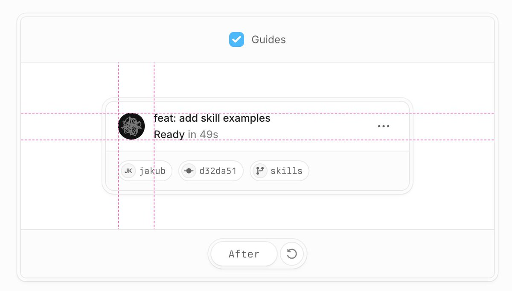

布局对齐
/better-layout
解决页面结构、栅格、对齐与间距问题，适合先修骨架。
- 版面秩序
- 块级关系
- 视觉层级
一条 X 原帖，点名 /better-layout、/better-ui、/better-typography、/better-colors、/better-writing 与 /better-interface，适合做成一张“前端工作流工具箱”信息卡。
原帖的重点不是某个库的 API，而是把开发者常见的 UI 痛点拆成布局、细节、排版、配色和写作几类可调用能力。
2026-08-02 · 原帖提到在自己的新闻精选项目中使用，收获显著。

解决页面结构、栅格、对齐与间距问题，适合先修骨架。
把按钮、间距、控件和字体组织成更一致的界面表达。
前两个偏视觉和文案，最后一个偏全局 review，把分散的内容一次性过一遍。
原帖作者与账号明确。
发布时间在原帖中可直接取到。
从布局到 review 形成完整链路。
代表这类前端工作流话题有明确传播度。
原帖是使用反馈，不是可复现 benchmark。
新闻精选项目里有效，不代表所有前端项目都同样显著。
重点在组合使用和 review 流程，而非单次操作。